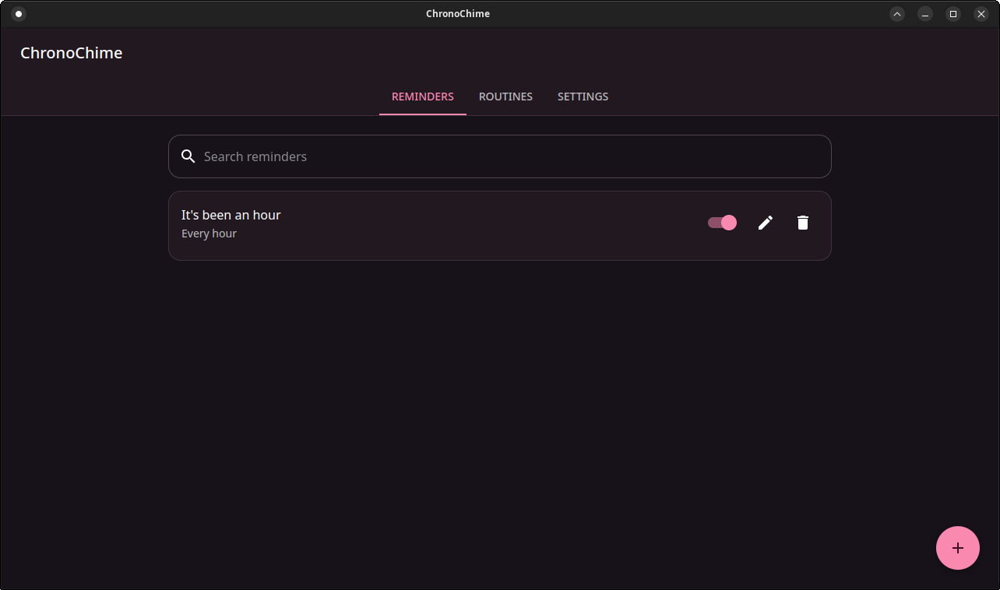
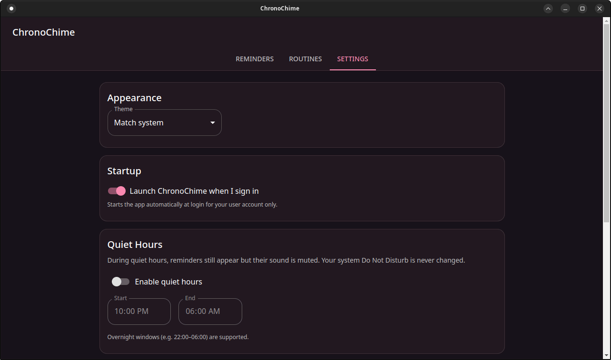
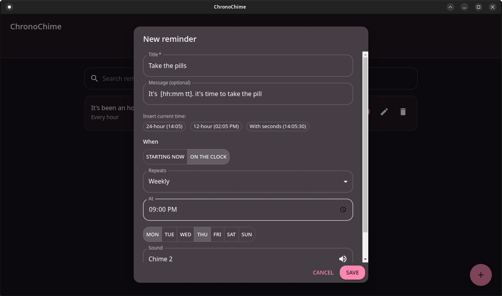

Keep track of time, beautifully and reliably.
A calm, local-first temporal notification companion. No trackers, no cloud sync, just you and your schedule.

Core Philosophy
Reliable Timing
Precise scheduling intervals, drift prevention, and deterministic recurrence powered by a robust local engine.
Custom Sounds
Personalize your experience with built-in sounds or provide your own audio chimes for notifications.
Composite Routines
Build multi-step temporal workflows like Pomodoro sessions or study intervals natively.
Quiet Hours
Set focus windows to respectfully suppress sound notifications when you need deep concentration.
Local-First & Private
Powered by local SQLite. Zero cloud connections, zero telemetry. Your data never leaves your machine.
Beautifully Simple


Ready to reclaim your time?
View Latest Releases
Available for Windows and Linux.